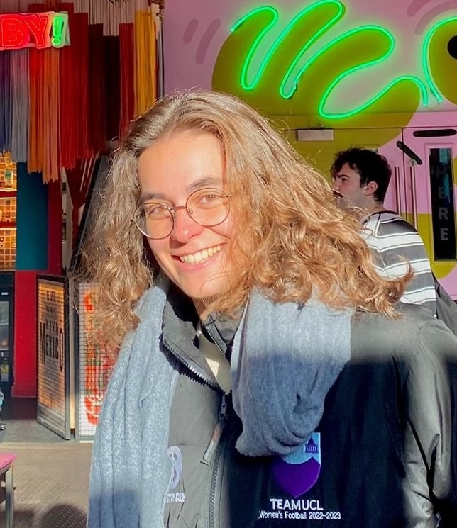
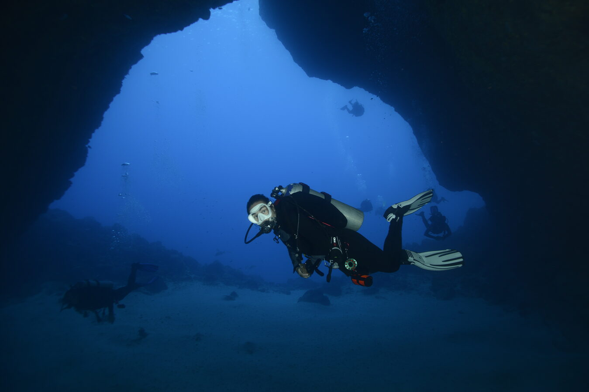
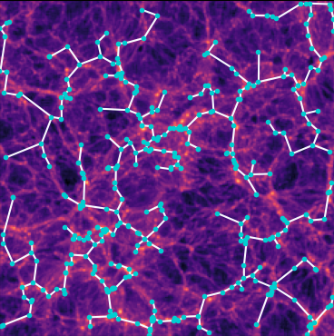

Intrinsic Alignments of Galaxies
I study how galaxies align with each other due to the local gravitational field. I do this using data from the Euclid telescope, the DESI survey, and N-body simulations.
Astrophysics PhD student · University College London · London, UK

I work on the intrinsic alignments of galaxies with data from Euclid and DESI, and with simulations, at the meeting point of observational cosmology, theory, and the physics of galaxy formation.
I am originally from Sines, a small port city on the southwest coast of Portugal, and I am now a PhD candidate in Astrophysics at University College London, where I work on the intrinsic alignments of galaxies using data from Euclid and DESI alongside cosmological simulations.
The research questions that keep me up at night can be divided into the following broad categories: how galaxies come to be aligned with the large-scale structure that surrounds them, and what that alignment can teach us about how galaxies form and evolve; how faithfully we can model intrinsic alignments in simulations, and how those models should be carried across to what we actually measure on the sky; how best to treat intrinsic alignments in weak lensing analyses of surveys such as Euclid and DESI, where they are usually seen as a contaminant but carry real cosmological information of their own; and, more broadly, what the cosmic web can tell us about the ingredients of our cosmological model. I like working at the point where observations, theory and simulations meet, because that is usually where it becomes clear which of the three is not telling the whole story.
Outside of research, you will most likely find me playing football, taking part in a pub quiz, or somewhere in the ocean (I love scuba diving and being in the water in general). I also spend a fair amount of my free time playing video games. If any of that overlaps with your interests, or if you would like to talk about intrinsic alignments, the cosmic web, or cosmology in general, please do get in touch!

I study how galaxies align with each other due to the local gravitational field. I do this using data from the Euclid telescope, the DESI survey, and N-body simulations.
I study the large-scale structure of the Universe, particularly how matter is distributed in a web-like pattern and how each component interacts with the others.
This is the culmination of my master's research project. In it, we applied the minimum spanning tree statistic to the FLAMINGO simulations and showed that it is sensitive to the effects of neutrino mass, while also allowing us to disentangle them from the influence of baryonic physics.

| Title | Event | Location | Date |
|---|---|---|---|
| "Implementing Three-Dimensional Intrinsic Alignment Models in Projected Simulations" | SBI for Galaxy Evolution 2026 | Cambridge, UK | June 2026 |
| "Field-level implementation of the TATT model: projection effects, smoothing choices, and the NLA limit" | Intrinsic Alignment Workshop, Institut d'Astrophysique de Paris | Paris, France | June 2026 |
| “Probing Neutrino Mass using the Cosmic Web” | COLOURS Summer School & Workshop, Institut Pascal (Université Paris-Saclay) | Orsay, France | June 2025 |